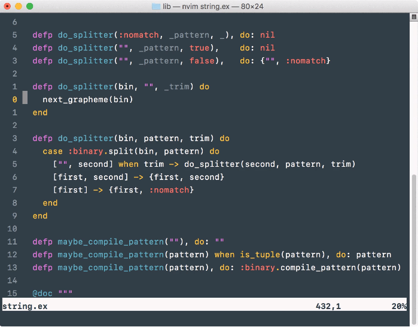

Vim commands
显示行号
使Vim在每一行前面显示行号。
注：下方的每行命令中的第二行均为第一行的缩写！效用相同。 <++>
- 方案一：absolute
所有行按照它的真实行号来显示。
效果图：

1 | " turn absolute line numbers on |
- 方案二：relative
以当前行号为基准（显示为0，实际不为0），其它行号为当前行号的相对值。
效果图：

1 | " turn relative line numbers on |
- 方案三：hybrid
当前行号是绝对值，其它行号为当前行号的相对值。（推荐）
效果图：

1 | " turn hybrid line numbers on |
- 分屏行号设置
如果需要分屏，两屏使用相同的方案显示行号。
可以改成如下图所示的，活动窗口以hybrid方案显示，非活动窗口以absolute方案显示。（推荐）

1 | " 设为hybrid方案 |
按行号跳转
1 | :行号(数字) |
在上面命令中填入要到达的行号即可。
例如
:31，即跳转到第31行。
拼写检查（英语）
1 | " 开启spell check |
Vim 内置拼写检查器，使用命令 :set spell 可以对当前文件中所有未在字典中出现过的单词进行标记并高亮显示。
- 开/关拼写检查功能
map <LEADER>sc :set spell!<CR>（spell check）
- Operations in Normal Mode
开启功能后，可以使用以下快捷键：
| Command | effect | 备注 |
| :—: | :—: | :—: |
| ]s | 跳转到下个拼写错误 | |
| [s | 跳转到上个拼写错误 | |
| z= | 当前单词的推荐集合（需光标移至错误单词上方） | |
| zg | 添加单词到拼写文件 | :h zg |
| zw | 从拼写文件删除当前单词 | |
| zug | 撤销对当前单词的 zg 或 zw修改 | |
z=： Vim的拼写检查提供修改建议功能，把光标移动到标记为拼写错误的词上方，按z=会出现修改建议，按数字选择需要的建议即可完成自动修改。
zg： Vim 有时会错误的把一些词标记为拼写错误, 是因为该词未收录在词典中。把光标移动到需要添加的词上方，使用 zg 命令(参考 :h zg)把光标处的词添加到拼写文件来教 Vim 识别该词。
zw： Vim 还提供了一个互补的 zw 命令, 可以把光标处的单词标记为拼写错误。
zug： 事实上, zg 或 zw 命令, 会添加或删除拼写文件中的单词。 Vim 为这种情况提供了专用的 zug 撤销命令, 它可以恢复对光标下单词的zg 或 zw 命令的操作
Vim 在拼写文件中记录添加到字典的单词, 以便它们在其他会话中也可以使用. 拼写文件的名称是用语言和文件编码命名的。
例如, 如果我们正在使用UTF-8编码的文件, 并且拼写检查器使用英语词典, 则使用 zg 命令添加的单词将会记录在名为 ~/.vim/spell/en.utf-8.add 的文件中
Fix Spelling Errors from Insert Mode
我们可以在插入模式使用
<C-x>s(参考:h compl-spelling) 命令来修复此错误, 它会触发一个弹出的自动补菜单可供选择。
可供弹出式菜单使用的命令
| Command | effect | 备注 |
| :—: | :—: | :—: |
|
|
|
|
|
|
当前文件转换为html格式输出
1 | :%TOhtml |